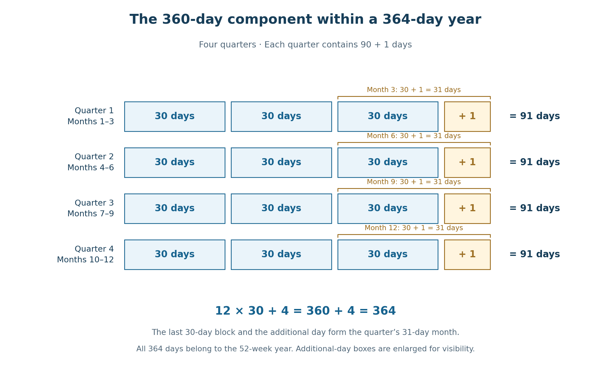
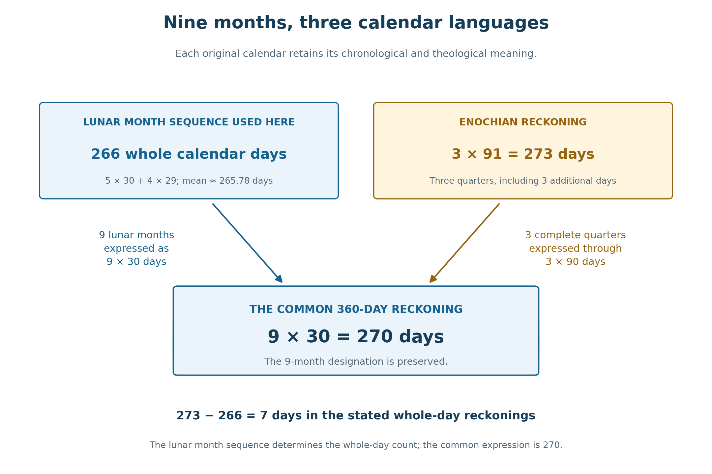
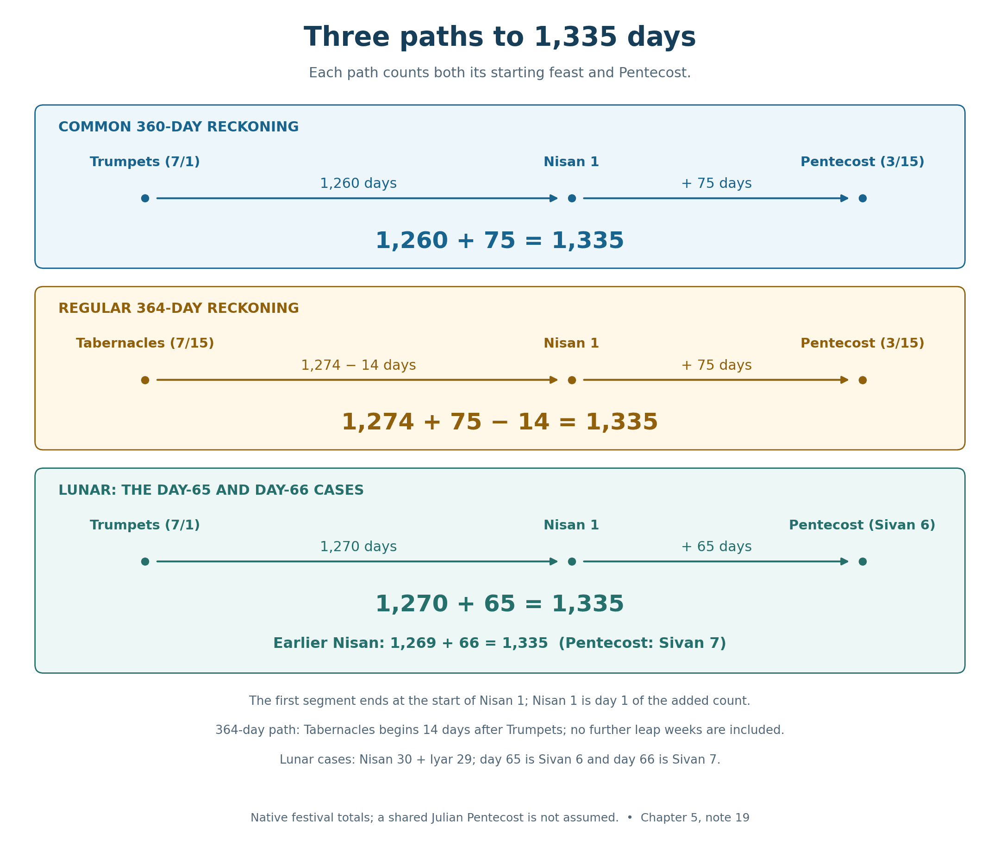
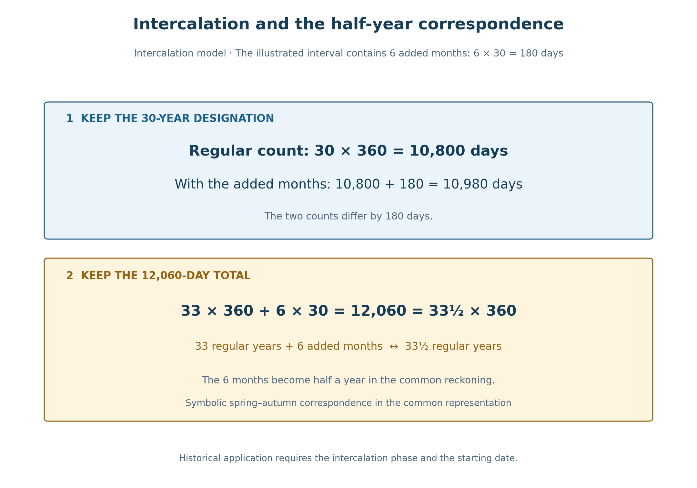

Book 1 · The Cross at the Center of Time · Chapter 5 of 18
The common language through which the calendars speak together
“And I will empower my two witnesses, and they will prophesy for 1,260 days, clothed in sackcloth.”
— Revelation 11:3
The previous chapters have placed differing dates and boundaries around the same Christ. We now turn to a shared numerical language through which their periods can be read together. I find that language in Scripture's proportions of thirty-day months and a 360-day year.
Revelation sets forty-two months beside 1,260 days. It also describes the woman's wilderness provision as both 1,260 days and a time, times, and half a time. The related expressions give 42 × 30 = 1,260, or three and a half years of 360 days.1
Genesis supplies an earlier witness. Its Flood account joins 150 days to corresponding dates five months apart. The same thirty-day proportion appears within that narrative. I take these relationships as grounds for treating the 360-day year as the common language of biblical symbolic time.2
The principle is central to this book: the original calendar retains its chronological and theological meaning, while the 360-day reckoning provides the normative common language through which its periods can communicate with others.
That word common does not make the individual calendars disposable. A lunar month still follows the moon; the Enochian year still completes its weeks; a feast still carries the meaning attached to its own date. The common count allows those witnesses to be heard in relation to one another. I see in that relation a numerical expression of the gathering in Christ.
In this chapter
- Months, quarters, and the divided whole
- Enoch's 360 and the additional four
- Fourteen quarters: 1,274 and 1,260
- Nine months in three languages
- The Flood's five months and Esther's half-year
- Daniel, Revelation, and the half-seven
- Three paths to 1,335
- Added months and the half-year relation
- The conceptions of John and Jesus
- The calendars retain their voices
- Sources and notes
Months, quarters, and the divided whole
The divisions of the common year are straightforward:
360 = 12 × 30 = 4 × 90 = 2 × 180.
A month contains thirty days, a quarter ninety, and half a year 180. Three and a half years contain forty-two months, or 1,260 days. The same proportion can therefore be expressed through months, quarters, or years.
When I translate a named period into this language, I retain its designation. Nine months remain nine months and are represented by 9 × 30 = 270 days. The original calendar continues to determine its native day total. Stating which quantity is preserved lets the two forms contribute without confusion.
The astronomical cycles have different lengths. A mean lunar month is approximately 29.53 days, and twelve such months total about 354.37. The mean seasonal year is about 365.24 days. The 360-day year lies close to the middle of those annual values, though its definition is twelve times thirty, rather than the exact result of averaging them.3
Table 1 — Four annual measures
| Reckoning | Length | Contribution to the comparison |
|---|---|---|
| Twelve mean lunations | About 354.37 days | The lunar cycle underlying a twelve-month lunar year. |
| Common biblical reckoning | 360 days | Twelve thirty-day months, the shared numerical form used here. |
| Regular Enochian year | 364 days | Four ninety-one-day quarters and fifty-two complete weeks. |
| Mean tropical year | About 365.24 days | The astronomical cycle of the seasons. |
Forty-two astronomical lunations, for example, amount to about 1,240.28 days. Forty-two months in the common reckoning are 1,260. The month designation is retained while its numerical expression changes. An actual interval between historical dates still requires the native calendar's rules and its whole-day month lengths.
The cultures surrounding Israel also give this form a setting. Egypt's civil year contained twelve thirty-day months followed by five additional days. Babylonian astronomical schemes used thirty-day months alongside a civil calendar whose lunar months required seasonal adjustment. Regular numerical forms and calendars fitted to observed cycles could coexist.4
I see the shared measure as a meeting place. Its significance grows when the lunar and solar reckonings are permitted to keep the features that first make their relationship interesting. Their own intervals are part of the testimony; the common expression makes further relationships visible.
Enoch's 360 and the additional four
The Astronomical Book of 1 Enoch distinguishes the leadership of the 360 days from four additional days associated with the divisions of the year. It also includes those days within the completed count of 364. The distinction and the full total must be read together.5
In the arrangement used here, each quarter has months of thirty, thirty, and thirty-one days:
30 + 30 + 31 = 91; 4 × 91 = 364.
Each quarter contains ninety regular days and one additional day. Across the year, 360 + 4 = 364. All 364 days belong to the continuous weekly count, giving fifty-two whole weeks.


Each quarter's final thirty-day block and its additional day form a thirty-one-day month. The full calendar retains every day, including the four that distinguish its annual total from 360.
Older translations call these four days intercalary. They recur annually in this arrangement. A further correction to keep successive 364-day years aligned with the seasons would do something different. The annual structure and its longer-term adjustment should therefore remain distinct.
Seasons and the Sabbath
The harvest festivals belong to agricultural seasons. A 364-day year is about a day and a quarter shorter than the seasonal year; left unadjusted, its dates would gradually move through those seasons. The harvest setting gives a practical reason to consider a correction.6
The weekly order places another condition on the solution. Jubilees grounds the Sabbath in creation, and the fixed calendar preserves the weekdays of its festival dates. A day added outside the weekly count would interrupt the continuous Sabbath rhythm. A day added within it would preserve that rhythm but move the annual dates through the weekdays. A whole-week addition can preserve both the uninterrupted week and the regular dates' weekday positions.
I therefore regard adjustment in whole weeks as a reasonable reconstruction. The sources and scholarly discussions allow several proposals; they do not establish a single historical schedule. The comparisons below identify when they use the regular 364-day structure without further leap weeks.7
The unadjusted count also carries its own meaning. Jubilees places Enoch with the angels for six jubilees while he learns the sun's order. Six forty-nine-year jubilees give 294 years. Counted as 364-day years, they total 107,016 days, very close to 293 solar years. I find that correspondence suggestive of the relation between the written scheme and the longer solar year. Its numerical precision is assessed by a modern comparison; the passage does not state a modern decimal year length.8
Fourteen quarters: 1,274 and 1,260
Three complete 364-day years and another half-year contain fourteen quarters. Their native day total is:
14 × 91 = 1,274.
Each quarter includes one of the annual additional days. The fourteen regular ninety-day components give:
1,274 − 14 = 1,260 = 14 × 90.
The same designation, three and a half years, is now expressed through the common 360-day language. The operation preserves the number of quarters while allowing the two calendars to give their own totals.9
Table 2 — A period in its native and common forms
| Period | Regular 364-day count | Quarter-ending additional days | Common 360-day representation |
|---|---|---|---|
| One quarter | 91 | 1 | 90 |
| Nine months | 273 | 3 | 270 |
| One year | 364 | 4 | 360 |
| Three and a half years | 1,274 | 14 | 1,260 |
The fourteen days are still present in the original calendar, its weeks, and its festivals. Their treatment in the translation does not physically remove them from history. I retain both counts because each can enter a meaningful relation with the biblical patterns under examination.
This distinction also governs the larger proposal about time. A numerical mapping is something we can define and check. The work of God that I believe it may reveal exceeds that operation. The mapping gives us a visible correspondence through which to contemplate the proposed harmony; it does not measure the manner in which God may renew past and future.
Nine months in three languages
A smaller comparison brings the same principle close to the beginning of a human life. Nine mean lunations amount to approximately 265.78 days. A whole-day sequence of five thirty-day months and four twenty-nine-day months totals 266 days, the lunar count used here.10
Nine months in the 364-day year span three quarters: 3 × 91 = 273 days. Nine months in the common reckoning are 9 × 30 = 270 days. The designation remains nine months while the calendar supplies its particular expression.


The lunar figure is a whole-day example, not the length of every nine-lunation interval. The Enochian figure includes its three quarter-ending days. Both nine-month designations can be represented as 270 in the common count.
Jubilees gives the 273-day relationship a narrative setting. Sarah's conception is placed in the middle of month six and Isaac's birth in the middle of the following month three. Corresponding positions in the repeating thirty, thirty, thirty-one arrangement are nine months, or 273 days, apart. The next chapter will return to the offerings and temporal associations surrounding that account.11
The two whole-day counts also differ by one week: 273 − 266 = 7. I retain that difference within the theological comparison, including its relation to the seven-day feasts. The week has not disappeared in the common representation. It remains a feature of the original intervals through which their differing testimony can be examined.12
The common figure of 270 lies close to the average of nine lunations and three quarters of a natural solar year. Again, the proximity is suggestive; the definition remains nine thirty-day months. The native figures, their difference, and their common designation all contribute.
The Flood's five months and Esther's half-year
The Flood narrative supplies a particularly clear monthly proportion. In the Masoretic sequence, the Flood begins on the seventeenth day of the second month, and the ark rests on the seventeenth day of the seventh. The narrative gives 150 days in association with that movement. Corresponding positions five months apart receive the expression 5 × 30 = 150.2
Five mean lunations give about 147.65 days. The same month-and-day positions in the repeating 364-day arrangement span 152. The biblical figure of 150 expresses the five months through the common thirty-day form. This is why I treat the proportion as more than a convenient modern device: the scriptural narrative itself brings the months and days into relation.13
Esther supplies another scale. The king's display of royal splendor lasts 180 days and is followed by a seven-day feast. I read the display as half a year in the common count, followed by a complete week. Esther supplies the durations without a pair of beginning and ending month dates, so the half-year interpretation rests on the numerical language rather than a separately stated calendar interval.14
In both accounts the numbers retain their narrative setting. The Flood concerns judgment and the preservation of life; Esther's opening concerns royal splendor and a feast. The common measure allows us to recognize corresponding temporal forms without making the stories or their actual circumstances interchangeable.
Daniel, Revelation, and the half-seven
Daniel's “a time, and times, and half a time” comes into sharper numerical form through Revelation's related periods. The expression is read as one, two, and a half: three and a half times. In the common year that becomes forty-two months and 1,260 days.15
3½ × 12 = 42; 42 × 30 = 1,260.
Table 3 — The related periods within their visions
| Passage | Period | Narrative setting |
|---|---|---|
| Daniel 7:25; 12:7 | A time, times, and half a time | Oppression and the completion of the announced distress. |
| Revelation 11:2–3 | Forty-two months; 1,260 days | The city's trampling and the witnesses' prophecy. |
| Revelation 12:6, 14 | 1,260 days; a time, times, and half a time | The woman's provision in the wilderness. |
| Revelation 13:5 | Forty-two months | The beast's permitted exercise of authority. |
The woman's provision gives an especially close link between the expressions. The neighboring month and day notices in Revelation 11 reinforce the proportion. Their equal lengths allow comparison while their distinct settings remain visible.16
These are periods with a limit. Oppression does not possess unlimited time. The witnesses receive their appointed span; the woman is sustained through hers. I read the half-seven in relation to Christ's work at the center: suffering and testimony are enclosed within a purpose whose completion belongs to God.
The additional thirty and seventy-five
Daniel 12 gives two further totals, 1,290 and 1,335. Relative to 1,260 they add thirty and seventy-five days; the difference between the longer totals is forty-five.17
Table 4 — Daniel's extensions in the common count
| Calculation | Difference | Relationship examined here |
|---|---|---|
| 1,290 − 1,260 | 30 days | One regular thirty-day month. |
| 1,335 − 1,260 | 75 days | Thirty plus thirty plus fifteen: the position of Pentecost in the festival scheme below. |
| 1,335 − 1,290 | 45 days | The remainder of the seventy-five after its first thirty days. |
The seventy-five has a particular festival correspondence. In the Wednesday-start 364-day calendar, the Feast of Weeks falls on month three, day fifteen. The first two months have thirty days each. Counting month one, day one as day 1, the feast therefore occupies 30 + 30 + 15 = day 75.18
The weekly sequence agrees. Here and below, dates such as 1/15 mean month 1, day 15. Unleavened Bread occupies 1/15–21. The first Sabbath after the feast is 1/25, and the barley sheaf is offered on Sunday, 1/26. Seven complete weeks lead to Sunday, 3/15. Counting both Sundays gives 75 − 26 + 1 = 50 days.
The first quarter-ending additional day comes after this feast, at the end of month three. Pentecost therefore retains its day-75 position when these opening months are expressed in the common reckoning. If the seventy-five-day segment begins with Nisan 1 as its first counted day, it reaches the Feast of Weeks.
Daniel does not name that festival in the passage. The correspondence is the interpretation I draw by bringing his extended period beside the calendar. Jubilees associates the feast with firstfruits and covenant renewal; Daniel blesses the one who reaches the 1,335 days. I find their relationship especially fitting within the larger inquiry into Christ's fulfillment.19
Three paths to 1,335
The common, Enochian, and lunar reckonings can each supply a festival path to the same total. Their starts and their native festival positions must be kept visible.


Each route counts both its starting feast and Pentecost. Nisan 1 belongs only to the second segment. The lunar day-66 variant is given in Table 5 below. The regular 364-day route excludes further seasonal leap weeks within the stated interval.
In the common 360-day reckoning, Trumpets at 7/1 stands three and a half years before the spring boundary at 1/1. That interval is 1,260 days. The seventy-five counted dates beginning with Nisan 1 then reach Pentecost's represented 3/15 position:
1,260 + 75 = 1,335.
In the regular 364-day reckoning, the corresponding Trumpets-to-Nisan interval is 1,274 days. Beginning instead at Tabernacles, 7/15, moves the starting point fourteen days later. The native interval to the spring boundary is then 1,274 − 14 = 1,260 days. Adding Pentecost's seventy-five-day position gives:
1,274 − 14 + 75 = 1,335.
This supplies two related forms of the Enochian comparison. The full fourteen-quarter period of 1,274 days has the common representation 1,260. The interval beginning fourteen days later at Tabernacles also gives a literal 1,260-day count to the Nisan boundary within the regular calendar. The latter calculation counts days directly in the regular 364-day calendar, with the starting feast changed from Trumpets to Tabernacles.
In the lunar example, a forty-three-month interval of 1,270 days connects Trumpets to Nisan 1. Pentecost on day 65 then gives:
1,270 + 65 = 1,335.
The lunar first segment is ten days longer than 1,260, while its Pentecost position is ten days earlier than day 75. The total remains the same. This is a concrete numerical relationship among the calendar paths, with each path retaining its festival setting.19
The two lunar positions in AD 33
Chapter 4 supplies the companion case that must remain beside the day-65 example. Under the Sunday rule, Firstfruits on April 5 remains the same Sunday whether it is Nisan 16 or Nisan 17. Pentecost remains Sunday, May 24, but its position from Nisan 1 changes.
Table 5 — The conditional AD 29–33 lunar application
| Beginning of Nisan 1 in AD 33, by its daylight | Interval from the assumed Tishri 1 daylight, September 28, AD 29 | Pentecost's position | Inclusive total |
|---|---|---|---|
| March 21 | 1,270 days | Day 65; Sivan 6 with the stated month lengths | 1,270 + 65 = 1,335 |
| March 20 | 1,269 days | Day 66; Sivan 7 with the stated month lengths | 1,269 + 66 = 1,335 |
In both rows, Nisan 1 is day 1 of the second segment and is not counted in the first. The one-day change in the month beginning redistributes a day between the two segments. The inclusive Trumpets-to-Pentecost total is unchanged.
The forty-three-month arrangement is the working historical reconstruction, not a result established by projecting a later Metonic rule backward. Ancient intercalation and declaration remain incompletely known. The dates above show exactly how the count works under its stated assumptions.19
The Enochian Pentecost need not coincide with this lunar Pentecost on the Julian calendar. Its placement depends on the seasonal beginning assigned to the fixed-week calendar and on any adjustments. A later Sunday, including a one- or two-week difference under particular reconstructions, can coexist with the native 1,335-day relation. Equal totals establish a numerical correspondence; identical historical endpoints would require an additional demonstration.
I see significance in the distinction itself. The calendars can approach Christ through related measures while retaining their particular festivals. Their common testimony need not be reduced to every clock displaying the same date label.
Atonement and the 1,260–1,290 comparison
The lunar calendar supplies a further relation through the autumn Day of Atonement. Taking Nisan 1 as the spring boundary, with Nisan 1 itself excluded from the first segment, the stated month totals yield the following counts.20
Table 6 — Three stated counting cases
| Trumpets-to-Nisan-boundary total | Treatment of Atonement, Tishri 10 | Result |
|---|---|---|
| 1,269 days | Include Atonement; remove the nine preceding dates. | 1,269 − 9 = 1,260 |
| 1,270 days | Exclude Atonement; remove the first ten dates. | 1,270 − 10 = 1,260 |
| 1,299 days | Include Atonement; remove the nine preceding dates. | 1,299 − 9 = 1,290 |
The last case belongs to a different intercalation arrangement. Moving from 1,270 to 1,299 adds a twenty-nine-day month; changing from exclusion to inclusion of Atonement supplies the remaining day in the thirty-day increase from 1,260 to 1,290. The count therefore states both changes openly.
This 1,299-day case is not being inserted into the AD 29–33 reconstruction above. It illustrates how a further lunar month and a defined inclusive convention can contribute to the related prophetic number. The autumn feasts at days one, ten, and fifteen now occupy distinct places in the comparisons: Trumpets, Atonement, and Tabernacles each bring their own testimony.
Added months and the half-year relation
The common language can also be applied to a 360-day calendar that receives seasonal adjustment. A model adding seven thirty-day months within forty regular years has a mean year of:
(40 × 360 + 7 × 30) ÷ 40 = 365.25 days.
That is the Julian mean. The model identifies the total adjustment; a historical application must also identify the placement of its added months. Scripture, Enoch, and Jubilees do not explicitly prescribe this seven-in-forty rule. I use it as a specified model with a comparative historical parallel, rather than attribute it to every ancient calendar.21
Consider a thirty-year interval containing six added months. Its regular count is 30 × 360 = 10,800 days. Including the six months gives 10,800 + 180 = 10,980 days. The difference is half a common year.
We can also hold a total fixed and express it in two forms. For example:
10,800 = 30 × 360 = 29½ × 360 + 6 × 30.
The first comparison preserves a designation of thirty years while distinguishing regular and adjusted counts. The second preserves 10,800 days while expressing that total through different combinations of years and added months. Which quantity is held fixed determines the meaning of the comparison.
A later conception-to-Passion comparison also expresses one fixed day total in two forms:
33 × 360 + 6 × 30 = 12,060 = 33½ × 360.
Thirty-three regular years with six additional months have the same total as thirty-three and a half unadjusted common years. With a specified seasonal anchor, the extra half-year gives a spring–autumn relation within the common representation. The historical date keeps its own season in the adjusted calendar.22


The lower comparison holds 12,060 days fixed. Applying it to particular historical dates requires the seasonal anchor and the phase of the intercalation model.
I retain this operation because the half-year has an identified source. It arises from six added months. The original count and its common expression can therefore be compared with their rules exposed, rather than by moving an endpoint until a number is obtained.
The conceptions of John and Jesus
Luke brings the annunciation to Mary into relation with Elizabeth's sixth month. In the conception-based comparison developed through the book, I represent the interval as six common months, or 180 days. The exact 180-day form is the representation being used; Luke's wording does not independently measure it to the day.23
Both conception counts can be directed toward a common ministry beginning.
Table 7 — Two related beginnings and one endpoint
| Starting point in the proposed comparison | Endpoint | Common-language expression |
|---|---|---|
| Jesus' conception | Beginning of Jesus' ministry | 30 × 360 = 10,800 days |
| John's conception, represented as 180 days earlier | The same ministry beginning | 10,800 + 180 = 10,980 days |
The two totals agree numerically with the regular and adjusted forms in the thirty-year example. Here their difference arises through related events: the conceptions are represented as half a year apart. There it arises through six additional months. I read the agreement as a coordinated pattern whose two operations remain distinguishable.
Adding the 1,260-day ministry representation to the 10,800-day conception count gives 12,060 days. That is the total already expressed as thirty-three years with six additional months, or thirty-three and a half regular common years. The later timeline will identify the proposed historical anchors and the particular ministry endpoint used for each application.
These numerical forms allow birth, ministry, and Passion to be contemplated together. Their significance belongs to the events and scriptural relationships as well as to the arithmetic. I am following the pattern toward Christ, while leaving every operation sufficiently clear for the reader to follow its steps.
The calendars retain their voices
Five months have spoken as 150 days; nine months as 270; forty-two months as 1,260. The Enochian year has contributed complete weeks and its four additional days. The lunar year has contributed its whole-day months and festival positions. Trumpets, Atonement, Tabernacles, and Pentecost have each entered a defined relationship.
The common reckoning allows these forms to communicate. Their native counts remain meaningful, including the differences between them. I see in this gathering something consonant with the work of Christ: distinct witnesses drawn toward a common fulfillment while the particular contribution of each remains recognizable.
The proposal at the heart of the book reaches beyond the calculations. I believe the Cross may be the actual center from which God's perfected order extends through time. The correspondences examined here are among the visible relationships through which I approach that conviction. They do not tell us how God acts beyond our temporal limits. They give us particulars to contemplate when we ask whether the Creator has gathered even humanity's differing measures into the revelation of His Son.
The next chapter turns to Jubilees and the relation between offerings and periods of time. Genesis gives an explicit starting point when Joseph interprets Pharaoh's cows as years. From there we can examine how sacrificial numbers and chronological patterns may carry a related testimony. The clocks are now before us; we begin to follow the further harmonies they make possible.24
Sources and notes
1. Revelation 11:2–3; 12:6, 14; 13:5. The opening quotation is BSB. Comparing 1,260 days with 42 months gives 30 days per represented month. Return to text
2. Genesis 7:11, 24; 8:3–4. The discussion follows the Masoretic date sequence represented in the BSB and reads the 150-day notice with the corresponding second- and seventh-month dates. Return to text 1 · Return to text 2
3. Fred Espenak, NASA, “Eclipses and the Moon's Orbit,” §4.2, gives a mean synodic month of 29.53059 days; 12 × 29.53059 = 354.36708 and 42 × 29.53059 = 1,240.28478. Using 365.2422 for the approximate mean tropical year, the lunar–solar midpoint is 359.80464 days. A quarter of that solar year is an average, not a statement that the astronomical seasons have equal lengths. See also the U.S. Naval Observatory's “Introduction to Calendars”. Return to text
4. Global Egyptian Museum, “Epagomenal days”, on Egypt's 12 thirty-day months and 5 additional days. For Babylonian schematic astronomy and its distinction from the civil lunisolar calendar, see J. M. Steele, “Shadow-Length Schemes in Babylonian Astronomy”, SCIAMVS 14 (2013), pp. 3–4. The divisibility comparison is 360 = 36 × 10 = 18 × 20 = 6 × 60. These parallels illustrate the common measure's versatility; they do not require identical calendars or numeral bases. Return to text
5. 1 Enoch 72:6–13; 75:1–2; 82:4–6, 11, 15, 18, R. H. Charles translation. Read the distinctions concerning the additional days alongside the insistence that they belong to the completed 364-day year. The book's broader common-language principle is the interpretive framework applied to this annual structure. Return to text
6. Exodus 23:12–16; Jubilees 2:17–33; 6:21–38. Whole weeks preserve both the Sabbath sequence and fixed annual weekdays. A 365-day calendar can retain uninterrupted Sabbaths if all days are counted, while its annual dates move through the weekdays. The objection concerns placing a day outside that continuous weekly count. Return to text
7. Compare 1 Enoch 74:13–16 on lunar and solar counts. Whole-week intercalation remains a reconstruction; the passages cited do not supply a schedule. For proposals and the debate, see Ron H. Feldman, “The 364-Day ‘Qumran’ Calendar and the Biblical Seventh-Day Sabbath”, Henoch 31/2 (2009), p. 343 n. 4; and Jonathan Ben-Dov and Stéphane Saulnier, “Qumran Calendars: A Survey of Scholarship 1980–2007”, Currents in Biblical Research 7/1 (2008), especially the discussion of seasonal festivals and intercalation. These treatments report several methods and differing assessments of historical practice. Return to text
8. Jubilees 4:21 places Enoch with the angels for 6 jubilees while he learns the sun's order. Reckoned as 6 × 49 years of 364 days, without leap weeks, this gives 107,016 days—almost exactly 293 solar years of 365.24232 days, closely matching a modern estimate for the book's commonly assigned second-century BC setting. I take this correspondence to suggest that Jubilees recognizes both the schematic count and the longer solar year. The decimal value is a modern calculation used to assess that correspondence. The principle resembles the conventional Sothic cycle: 1,461 Egyptian civil years of 365 days equal 1,460 Julian years of 365.25 days. See Censorinus, De die natali 18.10; K. M. Borkowski, “The Tropical Year and Solar Calendar”, equation 12; and Todd R. Hanneken's introduction to Jubilees, “Date and Purpose.” Return to text
9. Table 2 uses the regular 30, 30, 31 sequence without further seasonal leap weeks. Fourteen quarters give 14 × 91 = 1,274; their regular components give 14 × 90 = 1,260. The mapping preserves the number of quarters, not an identical elapsed-day total. Return to text
10. Nine mean lunations total 265.77531 days. A whole-day sequence of five 30-day months and four 29-day months totals 266; other sequences can differ. Month-length regulation tracks the lunar phases, while an added thirteenth month maintains the year's seasonal relationship. These are distinct adjustments. The 266-day figure is the whole-day count used in this comparison, not a claim that every nine-month lunar interval or pregnancy has that length. Return to text
11. Jubilees 16:12–14, Charles translation, compared with James C. VanderKam's translation prepared for the 2018 Hermeneia commentary: the sequence connects the middle of month 6 with conception, the middle of month 3 with Isaac's birth, and circumcision with the eighth day. Corresponding positions, such as 6/15 to the following 3/15, give 273 elapsed days in the 30, 30, 31 arrangement. Return to text
12. Leviticus 23:6–8, 34–36. The exact 7-day difference compares the stated whole-day counts, 273 and 266. Comparing 273 with the astronomical mean of 265.77531 instead gives 7.22469 days. Three quarters of a mean tropical year, calculated as ¾ × 365.2422, give 273.93165; the midpoint with nine mean lunations is 269.85348. Return to text
13. Five mean lunations give 5 × 29.53059 = 147.65295 days. The 364-day comparison from 2/17 to 7/17 contains 30 + 31 + 30 + 30 + 31 = 152 elapsed days. The common count is 5 × 30 = 150. These comparisons distinguish the calendrical representations; the broader historical Flood chronology is outside this chapter's scope. Return to text
14. Esther 1:3–5. The text gives a 180-day display followed by a seven-day feast. Its expression as half a year uses the common reckoning; Esther does not supply starting and ending month dates for the display. Return to text
15. Daniel 7:25; 12:7; Revelation 12:6, 14. The quotation follows BSB Daniel 7:25. The associated periods support the reading of “times” as 2 and the whole expression as 3½. Return to text
16. Revelation 11:2–3; 12:6, 14; 13:5. Table 3 preserves the different narrative settings. Equal numerical lengths do not by themselves establish identical historical starting and ending dates for every vision. Return to text
17. Daniel 12:11–12 states 1,290 and 1,335 days. The comparisons with 1,260 yield 30 and 75; the remaining difference is 45. The 30 is a month-sized extension. Identifying it specifically as an intercalary month would require the rule of the calendar being applied; this discussion does not insert a 30-day leap month into the fixed-week Enochian year. Return to text
18. Leviticus 23:15–16 prescribes seven full weeks and a count of fifty days. In the Wednesday-start 364-day calendar, Unleavened Bread occupies 1/15–21; the following Sabbath is 1/25, and the barley sheaf is offered on Sunday, 1/26. The wheat firstfruits at the Feast of Weeks follow on Sunday, 3/15: 49 elapsed days, or 50 counted dates including both Sundays. See Rochberg-Halton and VanderKam, “Calendars,” Anchor Bible Dictionary, on Jubilees, the Temple Scroll, and the priestly-course calendars. This count agrees with the mid-third-month festival in Jubilees 15:1 and the sequence in 44:4–5; compare VanderKam's 2018 translation and 6:17–22. Within this reckoning, Pentecost's placement on day 75 is secure. Day 75 begins after 74 elapsed days from the start of 1/1. Daniel does not name Pentecost or this year-start alignment; the association with his extended periods is the interpretation developed here. Return to text
19. Counting both feast dates, the common 360-day reckoning runs from Trumpets (7/1) to Pentecost's represented date (3/15) as 1,260 + 75 = 1,335 days. In the regular 364-day calendar, the corresponding Trumpets count is 1,274 + 75 = 1,349; starting fourteen days later at Tabernacles (7/15) gives 1,274 + 75 − 14 = 1,335. The fourteen-day shift matches the extra day in each of fourteen quarters; further seasonal leap weeks are outside this comparison. A lunar counterpart reaches Pentecost by the Pharisaic count: where the 43-month interval from Trumpets to Nisan 1 spans 1,270 days, 1,270 + 65 = 1,335, again counting both festivals. Pentecost falls on day 65 from Nisan 1 because the fifty-day count begins on Nisan 16: 16 + 49 = 65. This is Sivan 6 when Nisan and Iyar contain thirty and twenty-nine days. The lunar count adds ten days before Nisan and reaches Pentecost on day 65 instead of day 75. All three comparisons retain the 1,335-day total and Pentecost's place in each calendar. See Leviticus 23:24, 34 and note 18; Josephus, Antiquities 3.250 and 3.252; Maimonides, Sanctification of the New Moon 8:5. The AD 33 Sunday-rule variant keeps the same Julian Pentecost: April 5 to May 24 is 49 elapsed days, or 50 inclusive. If April 5 is Nisan 17, Pentecost is day 66 (Sivan 7 with Nisan 30 and Iyar 29), and the conditional Trumpets-to-Nisan interval is 1,269 days: 1,269 + 66 = 1,335. The corresponding day-65 case gives 1,270 + 65 = 1,335. Both use the assumed Tishri 1 daylight of September 28, AD 29; Nisan 1 daylight is March 20 or March 21, AD 33. The forty-three-month reconstruction is a working assumption; a retrospective Metonic calculation does not establish the ancient intercalation decisions. Equal native festival totals do not establish a common Julian Pentecost. Return to text 1 · Return to text 2 · Return to text 3
20. A lunar counterpart takes the Day of Atonement (7/10) as its autumn marker and the beginning of Nisan 1 as its spring boundary; Nisan 1 itself is not counted. An interval of 3 years and 6 months contains 43 lunar months with one intercalation, or 44 with two. For the whole-day totals considered here, measured from Tishri 1 to that boundary, 1,269 − 9 = 1,260 includes Atonement; 1,270 − 10 = 1,260 excludes it; and 1,299 − 9 = 1,290 includes it. The 1,270-day example can comprise 23 months of 30 days and 20 months of 29 days; another 29-day month gives 1,299. The count increases by 30 because it includes both the added 29 days and Atonement, previously excluded. These alignments depend on the stated month totals and counting conventions. The 1,299-day case is a separate intercalation example and is not inserted into the AD 29–33 reconstruction in Table 5. See Leviticus 23:27 and Exodus 12:2; for a later account of 29- or 30-day intercalation, see Maimonides, Sanctification of the New Moon 4:17. Read alongside note 19, this comparison suggests to me that the autumn feasts on days 1, 10, and 15 can bear a related testimony to Christ's reconciling work. The 360-day common measure, lying near the lunar–solar midpoint, serves here as an image of His mediation: the calendars speak together while each retains its own testimony. Return to text
21. Seven 30-day months in 40 regular 360-day years give 365.25 days per year on average. The model specifies a cycle total, not the placement of leap months in a particular interval. Scripture, 1 Enoch, and Jubilees do not explicitly prescribe this seven-in-forty rule. Al-Biruni reports a related Persian tradition of 21 added months in 120 years: The Chronology of Ancient Nations, trans. C. E. Sachau (1879), p. 13. That report gives the same mean, since 120 × 360 + 21 × 30 = 43,830. It supplies a comparative parallel; its attribution to early Persian kings is a reported tradition, not established practice of all Zoroastrians. Return to text
22. The comparison assumes an interval containing 6 additional months. Thus 33 × 360 + 180 = 12,060 = 33½ × 360. Expressing the same day total differently does not add an elapsed historical half-year. The proposed seasonal application needs a starting date and intercalation phase. The figure explains the operation without assigning a Julian date or an observed equinox. Return to text
23. Luke 1:26, 36 supplies the sixth-month relationship; 180 days is its representation in the common count. Luke 3:23 describes Jesus as “about thirty years old” at the beginning of His ministry. That approximate age does not itself establish an exact interval from conception. The 10,800-day conception-to-ministry count belongs to the book's proposed comparison. The separate 1,260-day ministry representation requires a defined endpoint when applied to the Passion, resurrection, or ascension; that choice belongs with the later historical timeline. Return to text
24. Genesis 41:25–27. Joseph interprets the cows and heads of grain as years. Chapter 6 examines the grounds for applying comparable symbolism to the offerings and chronological patterns in Jubilees. Return to text
Scripture quotations are from the Berean Standard Bible (BSB), public domain. References to 1 Enoch and Jubilees use R. H. Charles's public-domain translations unless otherwise indicated; the cited Jubilees calendar passages were also compared with VanderKam's 2018 translation.